00이 매뉴얼에 대하여
옹벽 구조물 안전성 검토 시스템은 중력식 · 캔틸레버식 콘크리트옹벽의 활동 · 전도 · 지지력 · 근입깊이와 앵커식 옹벽의 필요앵커력 · 허용인발력 · 허용인장력 · 자유장 · 정착장을 국가건설기준 조항대로 검토해 A4 검토 보고서로 정리하는 웹도구입니다.
| 항목 | 내용 |
|---|---|
| 대상 프로그램 | 옹벽 구조물 안전성 검토 시스템 MANMIN Ver-5.1(v5.1.0) |
| 접속 주소 | manminkim-eng.github.io/tomog-ongbyeog |
| 매뉴얼 판 | Ver-5.1 (화면 표기와 같은 판 번호, 초판) · 2026-10-17 · 작성 김만민 건축사(㈜대성건축사사무소) |
| 내려받기 | PDF(A4) · 검토 시스템 열기 |
| 근거 | KDS 11 80 05 콘크리트옹벽 · KDS 11 60 00 앵커 설계기준 (2025. 12. 24. 개정) — 국가건설기준센터(kcsc.re.kr) 원문 대조(2026-10-17) |
| 범위 | 평상시 외적 안정(활동 · 전도 · 지지력)과 근입깊이 · 앵커 내적 검토 — 전체안정성 · 침하 · 지진 시 · 수압 · 부재 단면설계는 따로 검토합니다 |
01한눈에 보기
설치 없이 브라우저에서 바로 열리는 단일 페이지(PWA)입니다. 입력값은 브라우저 안에서만 계산하고 서버로 보내지 않습니다.
1-1. 화면 구성
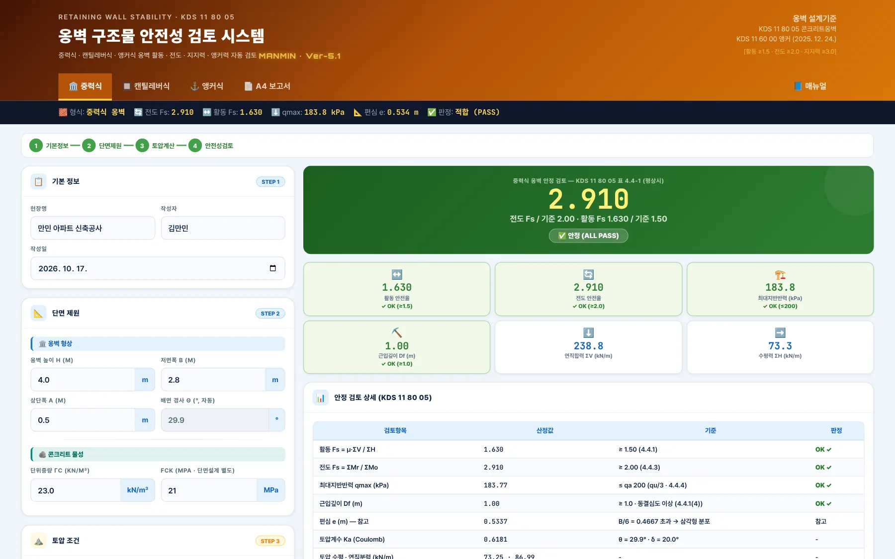
12345- 1형식 탭 3개 + A4
- 2📘 매뉴얼
- 3요약 바
- 4입력
- 5결과
1-2. 탭 · 검토 항목
| 탭 | 검토 내용 |
|---|---|
| 🏛️ 중력식 | 자중으로 토압에 저항 — Coulomb 토압 · 활동 · 전도 · 지지력 · 근입깊이 |
| 🔲 캔틸레버식 | 역T형 — 뒷굽 끝 연직 가상배면 Rankine 토압 · 같은 4항목 |
| ⚓ 앵커식 | 지반앵커 — 필요앵커력 · 허용인발력 · 허용인장력 · 자유장 · 정착장 · 설치각 |
| 📄 A4 보고서 | 형식을 골라 검토 보고서를 인쇄 / PDF · JPG 저장 |
021분 따라하기
예제 A — 만민 아파트 신축공사 중력식 옹벽(입력값은 예시).
- ① 형식「🏛️ 중력식」 탭.
- ② 단면H = 4.0 m · 저면폭 B = 2.8 m · 상단폭 a = 0.5 m → 배면 경사 θ = 29.9° 자동 표시 · 콘크리트 γc = 23 kN/m³.
- ③ 토압뒤채움 γs = 18 kN/m³ · φ = 30° · β = 0° · 상재하중 10 kN/m²(KDS 11 80 05 1.7.4(2)).
- ④ 기초μ = 0.5 · 허용지지력 qa = 200 kPa(qu/3) · 근입깊이 Df = 1.0 m.
- ⑤ 검토「안전성 검토 실행」 → 활동 1.630(≥ 1.5) · 전도 2.910(≥ 2.0) · qmax 183.8 kPa(≤ 200) · Df 1.0 m → 적합.
- ⑥ A4 보고서「📄 A4 보고서」 탭 → 「인쇄 / PDF 저장」 또는 「JPG 저장」.
03화면별 기능
3-1. 머리 · 매뉴얼
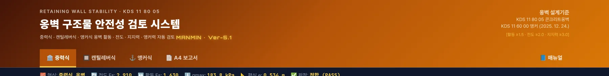
1234- 1도구 이름 · Ver-5.1
- 2📘 매뉴얼 — 탭 막대 끝
- 3KDS 11 80 05 · 11 60 00 (2025. 12. 24.)
- 4형식 탭
탭 막대 오른쪽 끝의 「📘 매뉴얼」은 이 문서를 새 창으로 엽니다(온라인 전용). 오른쪽 근거 블록은 적용 기준과 개정일 · 기준안전율입니다.
3-2. 중력식 — 기본 정보 · 단면
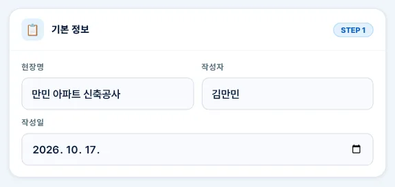
123- 1현장명
- 2작성자
- 3작성일
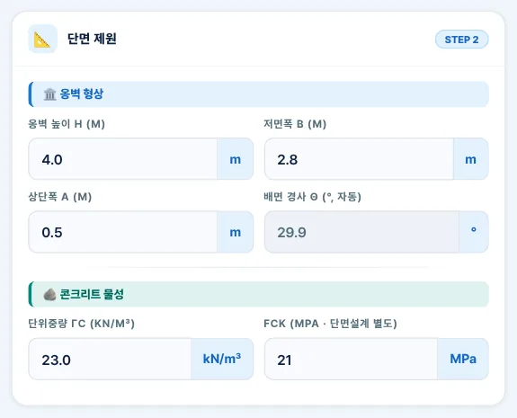
123456- 1높이 H
- 2저면폭 B
- 3상단폭 a
- 4배면 경사 θ — 자동
- 5콘크리트 γc
- 6fck — 단면설계 별도
| 칸 | 쓰임 |
|---|---|
| 현장명 · 작성자 · 작성일 | A4 보고서 머리에 들어감 |
| H · B · a | 전면 연직 · 배면 경사 단면 — 상단폭 a에서 저면폭 B로 넓어짐 |
| 배면 경사 θ | atan((B − a)/H)로 자동 계산(입력 불가) — Coulomb 토압에 사용 |
| γc | 콘크리트 단위중량 — 자중(1.7.2) |
| fck | 단면설계(KDS 14 20 00)용 — 안정 검토에는 쓰지 않음 |
3-3. 중력식 — 토압 · 기초 조건
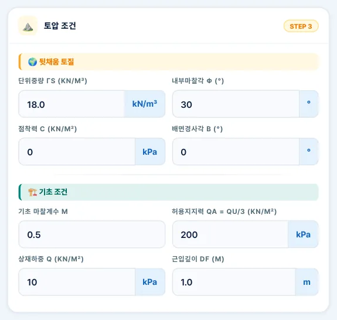
12345678- 1뒤채움 γs
- 2φ
- 3c — 특수설계
- 4배면 경사 β
- 5μ
- 6qa = qu/3
- 7상재하중 10 kN/m²
- 8근입깊이 ≥ 1.0 m
| 칸 | 쓰임 |
|---|---|
| γs · φ | 뒤채움 단위중량 · 내부마찰각 — 지반조사 · 시험값 |
| 점착력 c | 토압에 점착력을 고려하면 특수설계(4.3.1①) — 이 도구는 c를 계산에 넣지 않고 안내만 |
| 배면 경사 β | 뒤채움 지표면 경사 — 토압계수에 반영(β ≥ φ면 계산 불가) |
| μ | 저판과 지반의 마찰계수 |
| qa | 허용지지력 = 극한지지력 qu ÷ 3.0(표 4.4-1) |
| q · Df | 상재하중(일시 하중 10 kN/m² 이상) · 저판 근입깊이(≥ 1.0 m) |
3-4. 중력식 결과
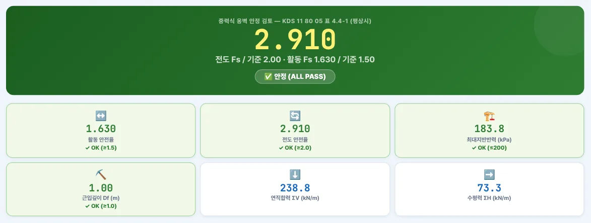
12345- 1전도 Fs
- 2활동
- 3전도
- 4지반반력
- 5근입깊이
네 항목(활동 · 전도 · 지반반력 · 근입깊이)이 모두 ✓이면 「적합」입니다. 상단 요약 바에 전도 · 활동 · qmax · 편심 · 판정이 함께 표시됩니다.
3-5. 안정 검토 상세
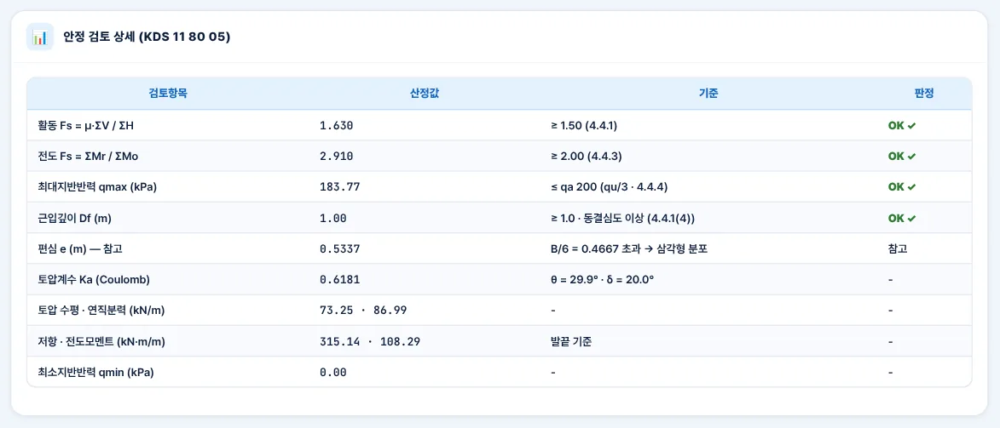
12345- 1활동 1.5
- 2전도 2.0
- 3qmax ≤ qa
- 4편심 — 참고
- 5Coulomb Ka
예제 A는 편심 e = 0.534 m로 B/6(0.467 m)을 넘어 지반반력을 삼각형 분포로 계산했습니다(qmin = 0). 편심은 판정이 아니라 분포 형태를 알려 주는 참고값입니다(4-5).
3-6. 사례 — 근입깊이 0.5 m
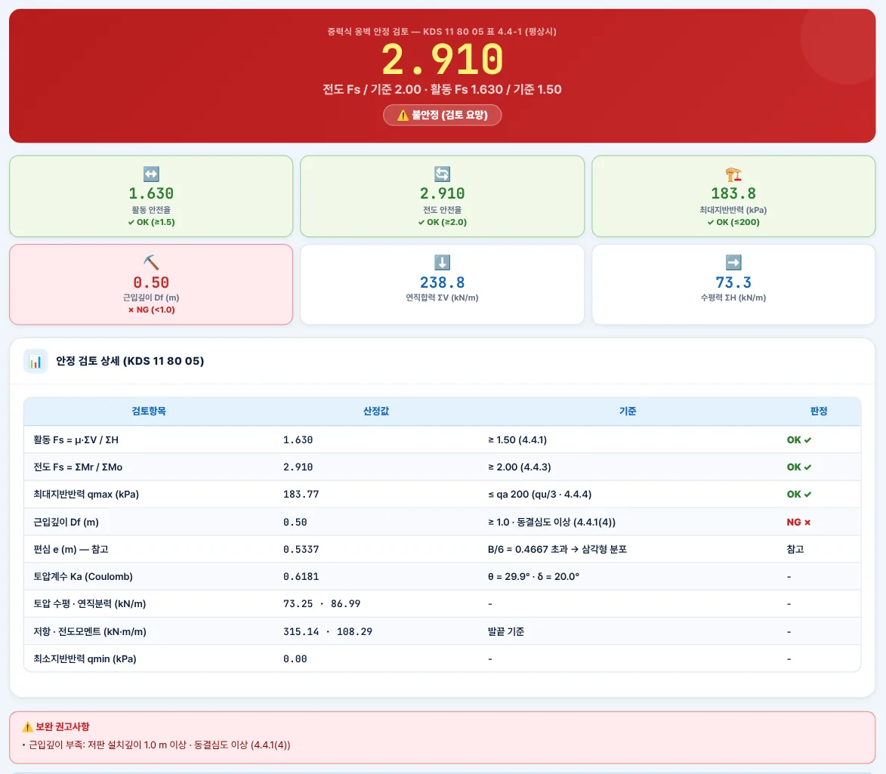
12- 1근입 0.5 m — NG
- 2보완 권고
안전율이 모두 ✓여도 근입깊이가 1.0 m 미만이면 부적합입니다(4.4.1(4) — 동결심도 이상, 최소 1.0 m).
3-7. 캔틸레버식 입력
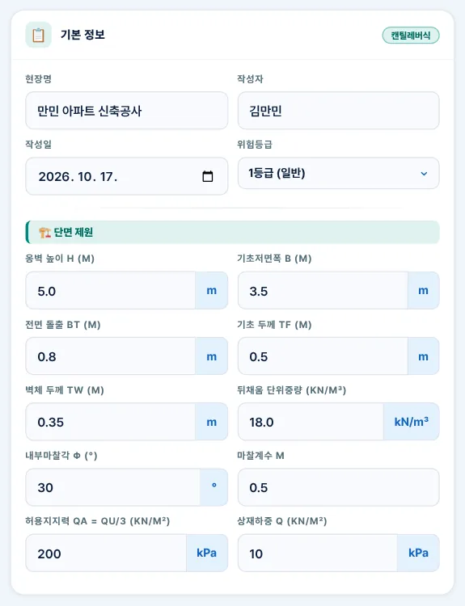
123456- 1벽체 높이 H
- 2저면폭 B
- 3앞굽 bt
- 4저판 tf
- 5벽체 tw
- 6qa = qu/3
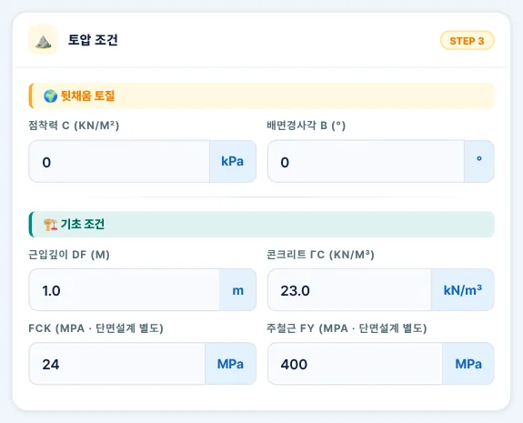
1234- 1c
- 2β — Rankine 반영
- 3근입깊이
- 4단면설계 별도
| 칸 | 쓰임 |
|---|---|
| H | 저판 윗면에서 벽체 꼭대기까지 — 토압 높이 H′ = H + tf + 뒷굽 × tanβ |
| bt · tw · tf | 앞굽 길이 · 벽체 두께 · 저판 두께 — 뒷굽 = B − bt − tw |
| 상재하중 | 뒷굽 위에만 연직력으로 더함 |
3-8. 캔틸레버식 결과 — 활동 부족
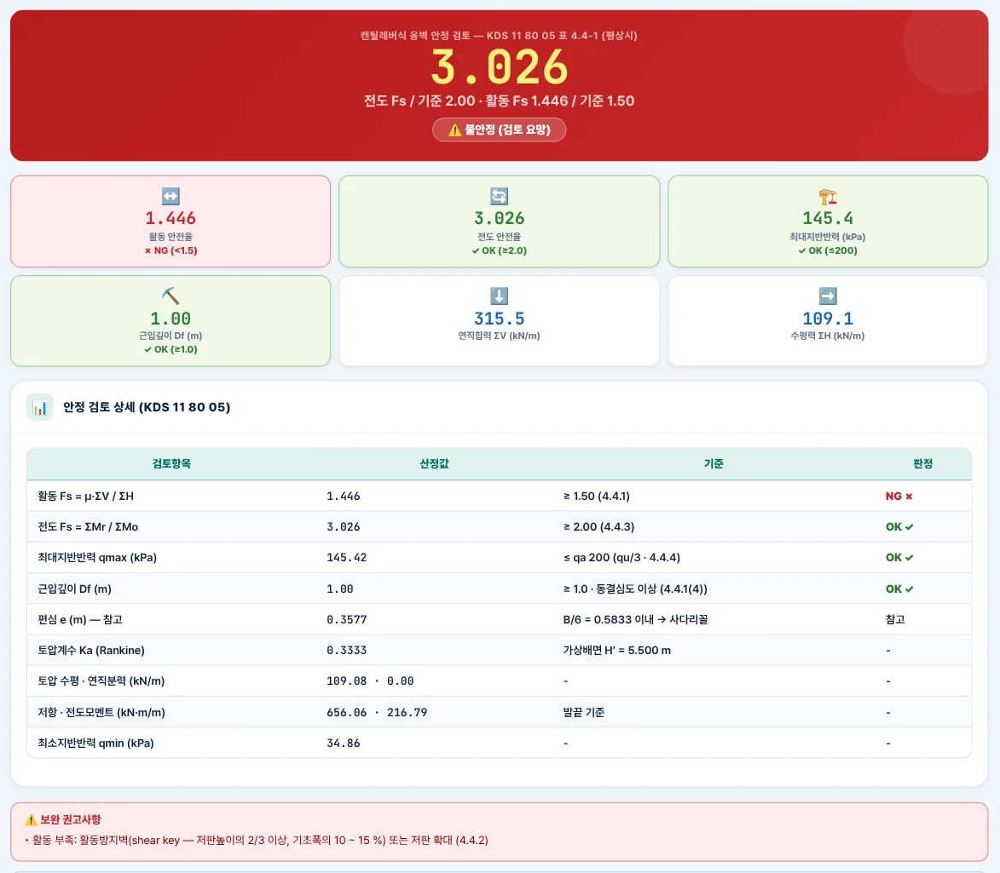
12- 1활동 1.446 — NG
- 2shear key · 저판 확대
활동 안전율 1.446으로 1.5에 못 미칩니다. v5.0은 상재하중을 앞굽 · 벽체 위까지 연직력으로 더해 1.499로 계산했습니다(역시 미달). 상재하중은 뒷굽 위에만 놓이므로 v5.1.0 값이 더 작습니다.
3-9. 사례 — 저면폭 3.7 m
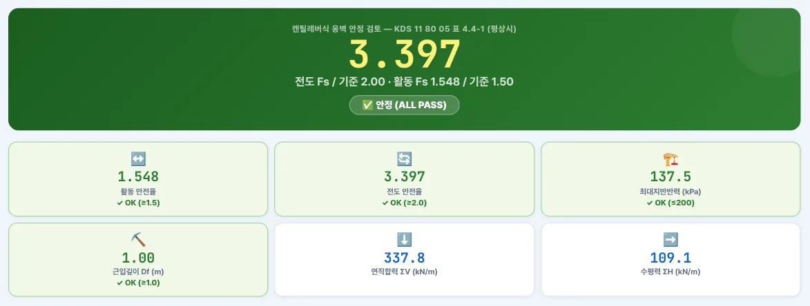
123- 1전도 Fs
- 2활동 — B 3.7 m
- 3지반반력
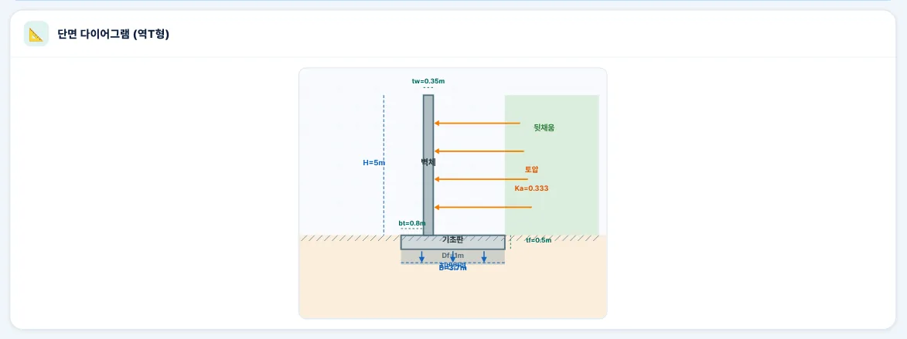
3-10. 앵커식 입력
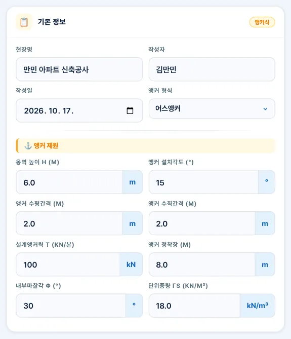
123456- 1앵커 형식
- 2설치각 ≥ 10°
- 3수평간격
- 4연직간격
- 5설계앵커력 T
- 6정착장 La
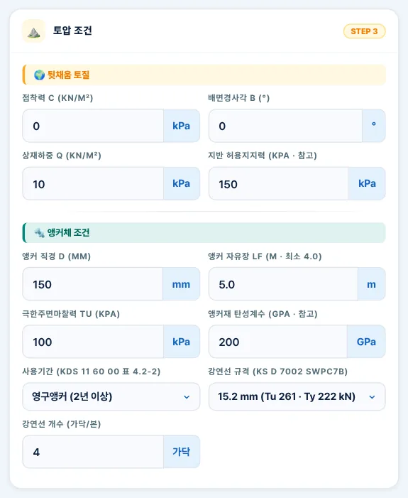
1234567- 1상재하중
- 2천공경 D
- 3자유장 ≥ 4.0 m
- 4τu
- 5가설 / 영구
- 6강연선 규격
- 7가닥 수
| 칸 | 쓰임 |
|---|---|
| 설계앵커력 T | 앵커 1본에 줄 설계 힘 — 필요앵커력 이상, 허용앵커력 이하 |
| 사용기간 | 가설(2년 미만) · 영구(2년 이상) — 인발 안전율 1.5 / 2.5, 인장재 허용 비율이 바뀜 |
| 강연선 규격 · 개수 | KS D 7002 SWPC7B 15.2 mm(Tu 261 · Ty 222 kN) · 12.7 mm(183 · 156 kN) — 제품 시험성적서 값 우선 |
| D · τu | 천공경 · 극한주면마찰력 — 극한인발력 Pu = π·D·La·τu(인발시험 확인) |
| 지반 허용지지력 · 탄성계수 | 참고 칸 — 앵커 검토에는 쓰지 않음 |
3-11. 앵커식 결과
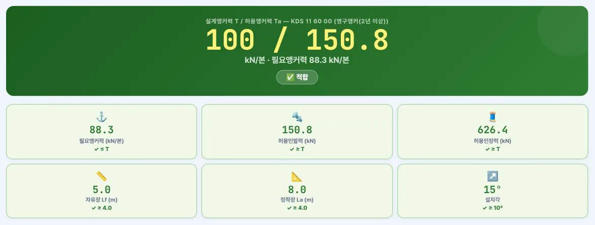
1234- 1T / Ta
- 2필요앵커력
- 3허용인발력
- 4허용인장력
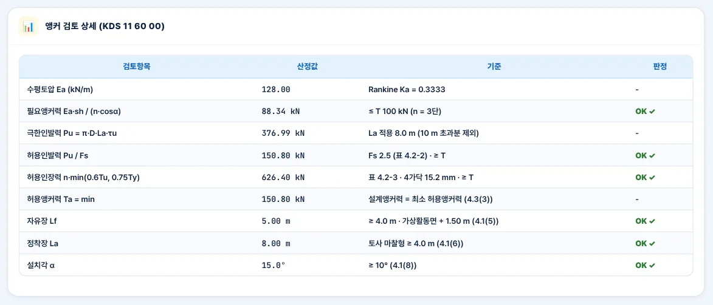
1234- 1필요앵커력
- 2Fs 2.5 (영구)
- 30.60Tu · 0.75Ty
- 4자유장 4.0 m
필요앵커력 88.3 kN ≤ T 100 kN ≤ 허용앵커력 150.8 kN(허용인발력 · 허용인장력 중 작은 값)이고 길이 · 각도 조건을 모두 만족해 적합입니다.
3-12. 사례 — 인발 · 자유장 부족
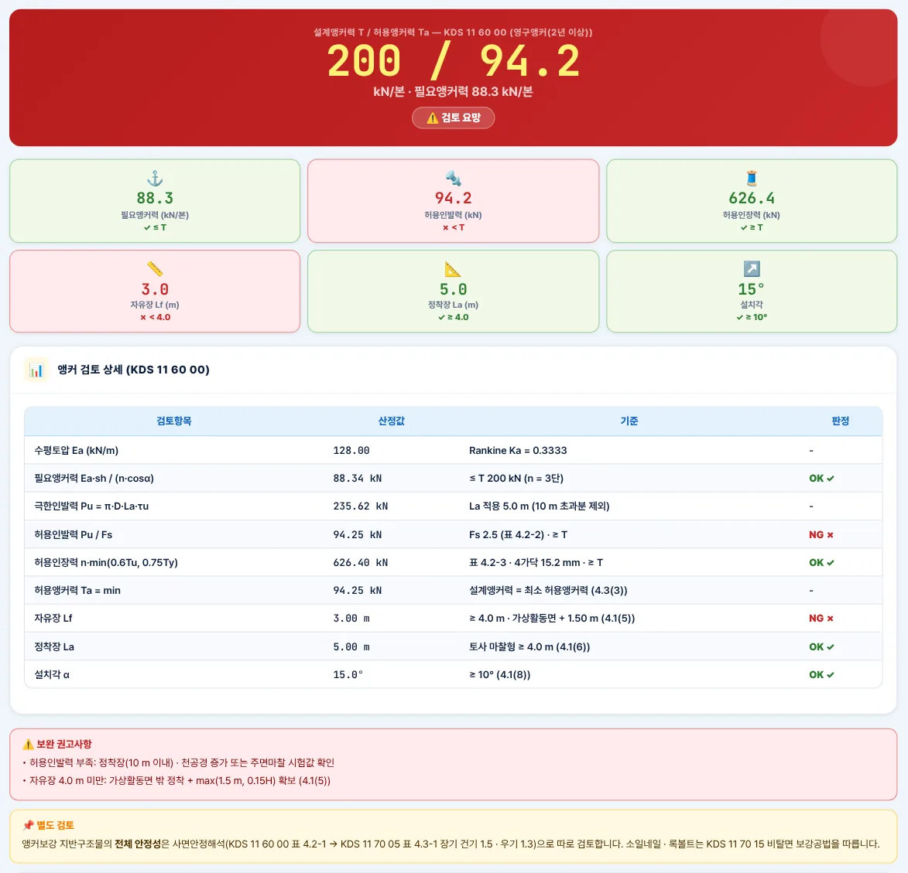
1234- 1인발 부족
- 2자유장 3.0 m
- 3보완 권고
- 4전체 안정성 — 별도 해석
허용인발력 94.2 kN이 T 200 kN에 못 미치고 자유장 3.0 m가 최소 4.0 m에 못 미칩니다. 정착장을 늘리면 인발력이 커지지만 10 m를 넘는 부분은 더하지 않습니다(4.1(7)).
3-13. A4 검토 보고서
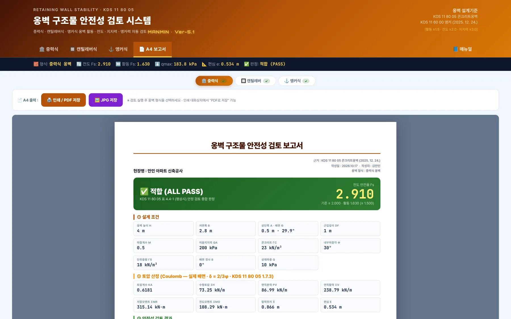
1234- 1형식 선택
- 2인쇄 · PDF
- 3JPG 저장
- 4A4 보고서
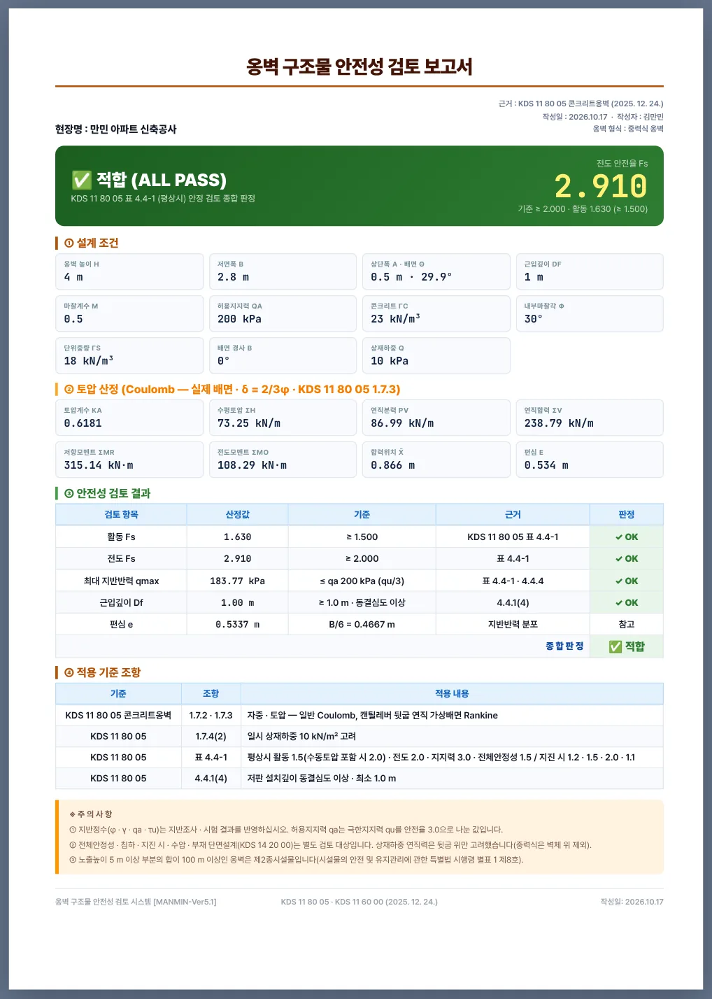
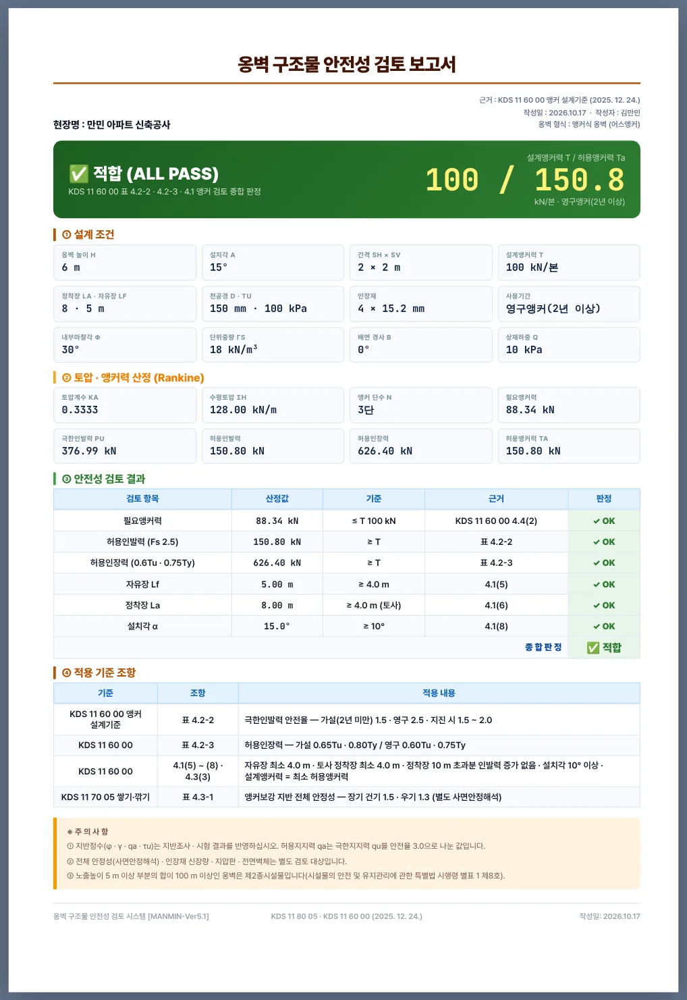
3-14. 도움말
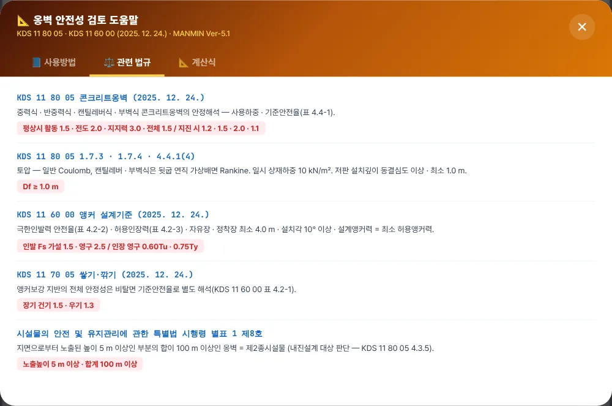
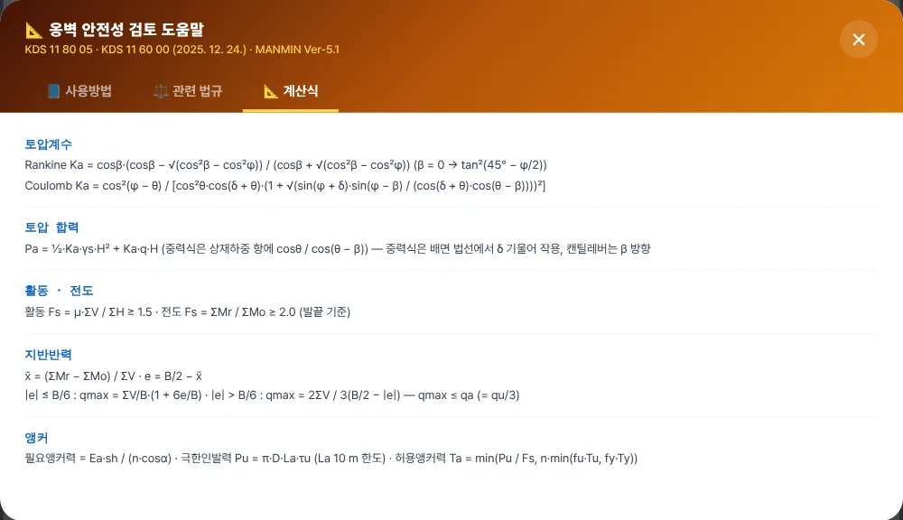
오른쪽 아래 「설계기준」 버튼으로 엽니다.
3-15. 휴대전화 화면
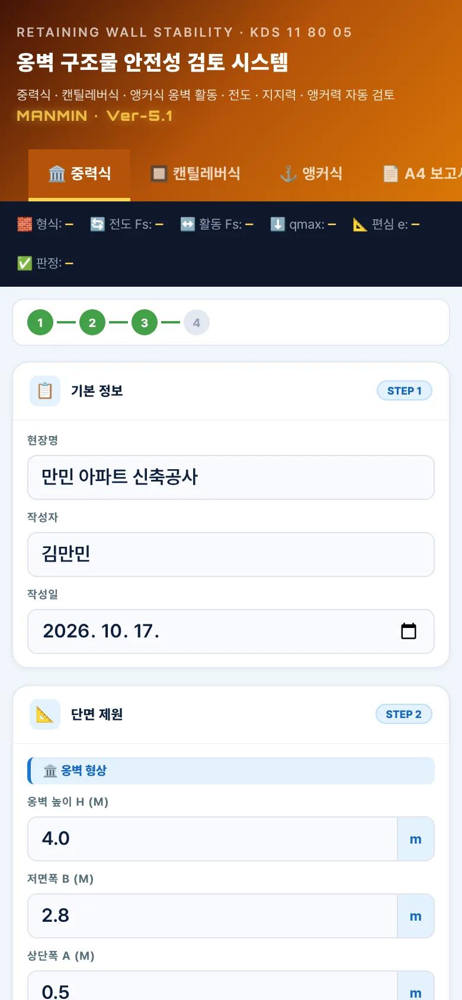
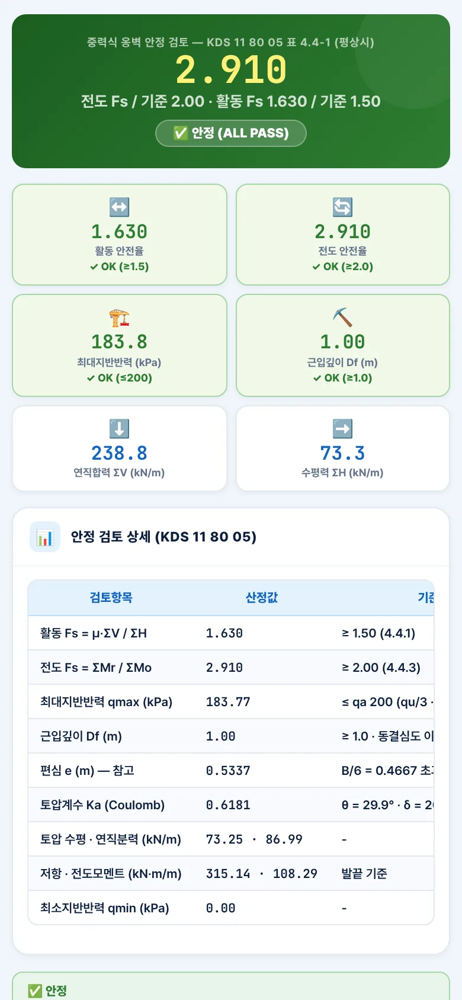
04기준 해설
4-1. 근거 체계
| 기준 | 이 도구에서 쓰는 조항 |
|---|---|
| KDS 11 80 05 콘크리트옹벽 | 2025. 12. 24. 개정 — 중력식 · 반중력식 · 캔틸레버식 · 부벽식(1.2) · 하중 · 토압(1.7) · 안전율(4.4) · 본체(4.6) |
| KDS 11 60 00 앵커 설계기준 | 2025. 12. 24. 개정 — 설계 원칙(4.1) · 안전율(4.2) · 내적안정(4.3) |
| KDS 11 70 05 쌓기·깎기 | 앵커보강 지반 전체 안정성의 기준안전율(표 4.3-1) |
| 출처 | 국가건설기준센터 kcsc.re.kr 원문 대조(2026-10-17) |
4-2. 안정검토 하중 · 기준안전율
안정검토(활동 · 전도 · 지지력 · 전체안정성 · 침하)는 하중계수를 곱하지 않은 사용하중으로 안전율을 확인하고, 단면설계는 강도설계법 계수하중으로 합니다(1.7.1(2)).
| 검토항목 | 평상시 | 지진 시 |
|---|---|---|
| 활동 | 1.5 (전면 수동토압을 넣으면 2.0) | 1.2 |
| 전도 | 2.0 | 1.5 |
| 지지력 | 3.0 | 2.0 |
| 전체안정성 | 1.5 | 1.1 |
KDS 11 80 05 표 4.4-1 — 이 도구는 평상시 활동 · 전도 · 지지력을 판정합니다.
4-3. 토압 — Coulomb · Rankine
| 구분 | 내용 |
|---|---|
| 1.7.3(2) | 일반적인 경우 Coulomb — 캔틸레버(역T · L형) · 부벽식처럼 뒷굽 연직 가상면에 토압이 작용하면 Rankine |
| 중력식 (MANMIN 적용) | 실제 배면(θ = 29.9°)에 Coulomb · 벽면마찰각 δ = 2/3φ · 합력은 배면 법선에서 δ 기울어 작용 → 수평분력 73.25 · 연직분력 86.99 kN/m(예제 A) |
| 캔틸레버식 | 뒷굽 끝 연직 가상배면 · 높이 H′ · 합력은 β 방향 — 뒷굽 위 흙 무게는 연직력으로 더함 |
| 상재하중 | 토압 = Ka·q·H(중력식은 cosθ / cos(θ − β)를 곱한 등가 흙두께 — MANMIN 적용) · 일시 하중 10 kN/m²(1.7.4(2)) |
4-4. 활동 · 전도
| 조항 | 내용 |
|---|---|
| 4.4.1(4) | 전면 흙의 수동토압은 변위 · 세굴 · 되메움 강도 때문에 무시하는 것이 안전측 — 이 도구는 수동토압을 넣지 않음 |
| 4.4.3 | 전도는 앞굽을 중심으로 한 저항모멘트 ÷ 작용모멘트 |
| 상재하중 연직력 | 중력식은 벽체 위에 상재하중이 없고, 캔틸레버식은 뒷굽 위만 — v5.0은 저면폭 전체에 더했음 |
4-5. 지지력 · 지반반력 분포
지지력 안전율 3.0(극한지지력 ÷ 지반반력)은 허용지지력 qa = qu/3와 qmax를 비교하는 것과 같습니다. KDS 11 80 05에는 「e ≤ B/6」 조항이 없습니다(4.4.3(3)의 하중저항계수설계법 간주 기준은 흙 B/4 · 암 3B/8). 그래서 편심은 분포 형태를 정하는 참고값으로만 표시합니다.
4-6. 근입깊이 · 활동방지벽
| 조항 | 내용 |
|---|---|
| 4.4.1(4) | 저판 설치깊이는 동결심도 이상, 지표면 아래 최소 1.0 m 이상 |
| 4.4.2(1) | 활동방지벽(shear key) 높이는 저판높이의 2/3배 이상, 기초폭의 10 ~ 15 % |
| 4.6.2(2)① | 피복 — 노출면 · 흙 접촉면 50 mm, 흙 속 기초 슬래브 80 mm 이상 |
4-7. 앵커 — 인발 · 인장 · 길이
| 항목 | 가설(2년 미만) | 영구 평상시 | 영구 지진 시 |
|---|---|---|---|
| 극한인발력 안전율 (표 4.2-2) | 1.5 | 2.5 | 1.5 ~ 2.0 |
| 허용인장력 (표 4.2-3) | 0.65Tu · 0.80Ty | 0.60Tu · 0.75Ty | 0.75Tu · 0.90Ty |
| 조항 | 내용 |
|---|---|
| 4.1(5) | 정착부는 가상 활동파괴면 밖 · 자유장 = 가상활동면까지 + max(1.5 m, 0.15H), 최소 4.0 m |
| 4.1(6) · (7) | 마찰형 토사층 정착장 최소 4.0 m · 10 m 초과분은 극한인발력 증가 없음 |
| 4.1(8) | 설치각은 수평면에 대해 10° 이상 |
| 4.3(3) · 4.4(2) | 설계앵커력 = 최소 허용앵커력 · 파괴면 저항력은 허용인장력과 허용인발력 중 작은 값 |
4-8. 별도 검토 항목
| 항목 | 내용 |
|---|---|
| 전체안정성 | 옹벽 · 기초 아래 · 배면 지반을 포함한 원호활동 — 수정 Bishop · Janbu · Spencer 등(4.4.5) · 앵커보강 지반은 비탈면 안전율(장기 건기 1.5 · 우기 1.3) |
| 지진 시 | 내진설계 대상(4.3.5 — 2종 시설물 규모 등)은 KDS 11 90 00과 표 4.4-1 지진 시 안전율 |
| 수압 · 부력 | 배수되지 않는 경우(1.7.5) — 배수공 2 ~ 4 ㎡당 1개소 · 내경 60 ~ 100 mm(4.6.3) |
| 부재 단면 | 벽체 · 앞굽 · 뒷굽 강도설계(4.6.1 · KDS 14 20 00) |
| 제2종시설물 | 노출높이 5 m 이상인 부분의 합이 100 m 이상인 옹벽(시설물의 안전 및 유지관리에 관한 특별법 시행령 별표 1 제8호) |
4-9. v5.1.0 정정 (2026-10-17)
| 항목 | 기존(v5.0) | 정정(v5.1.0) |
|---|---|---|
| 옹벽 기준 | KDS 11 80 10 (2016) 「옹벽 설계기준」 | KDS 11 80 05 콘크리트옹벽 (2025. 12. 24.) — 11 80 10은 보강토옹벽 |
| 앵커 기준 | KDS 11 50 15 (2019) | KDS 11 60 00 (2025. 12. 24.) — 11 50 15는 깊은기초 |
| 기타 표기 | KDS 14 20 54 철근 · KDS 11 10 05 편심 B/6 · 건설기술진흥법 시행규칙 제60조 5 m | 삭제 — 각각 콘크리트용 앵커 · 해당 조항 없음 · 안전관리비 조항 |
| 중력식 토압 | Rankine · 배면 무시 | Coulomb · δ = 2/3φ · 연직분력 |
| 중력식 도심 | 배면 삼각형 a + (B − a)×2/3 | a + (B − a)/3 |
| 상재하중 연직력 | 저면폭 전체 | 중력식 제외 · 캔틸레버 뒷굽 위만 |
| 지반반력 | e > B/6에도 사다리꼴식 | 삼각형 분포 · 편심은 참고 |
| 근입깊이 | 입력만 | ≥ 1.0 m 판정 |
| 앵커 | 인발 2.0 · 전체안정 간이식 1.2 | 가설 1.5 / 영구 2.5 · 허용인장력 · 자유장 · 정착장 · 설치각 · 전체안정은 별도 해석 |
예제 A(기본 단면 · Df 1.0 m)의 전도 안전율은 v5.0 2.93 → v5.1.0 2.910입니다. 규칙을 파이썬으로 따로 옮긴 계산과 앱 엔진을 무작위 · 경계값 21,000건으로 대조해 불일치 0, 일부러 넣은 오류 4종을 모두 검출했습니다(manual/_tools/verify_rw.py).
05실무 작업 방법
5-1. 검토 절차
- ① 지반정수지반조사 · 시험으로 γ · φ · 허용지지력(qu/3) · 앵커 주면마찰력을 정함 — 높이 8 m 초과는 뒤채움 역학시험(2.1.1).
- ② 형식높이 · 공간 · 지반에 맞춰 중력식 → 캔틸레버식 → 부벽식 순으로 검토(1.6.1).
- ③ 안정활동 · 전도 · 지지력 · 근입깊이 — ✗는 저면폭 · 뒷굽 · 활동방지벽 · 근입깊이로 조정.
- ④ 별도 검토전체안정성 · 침하 · 지진 시 · 수압 · 부재 단면(4-8).
- ⑤ 상세배수공 · 신축이음(중력식 10 m · 캔틸레버 15 ~ 20 m 이하) · 피복 · 수축이음(4.6.2 · 4.6.3).
- ⑥ 기록A4 검토 보고서를 설계도서 · 검토 자료에 첨부.
5-2. 문제 해결 · FAQ
| 증상 | 해결 |
|---|---|
| 예전 결과와 안전율이 달라요 | v5.1.0에서 계산을 원문대로 바꿨습니다(4-9) — 다시 검토하십시오 |
| 안전율은 다 OK인데 부적합이에요 | 근입깊이 1.0 m 미만인지 확인(4.4.1(4)) |
| 배면 경사 θ를 못 바꿔요 | B · a · H로 정해지는 값이라 자동 표시입니다 |
| 편심이 B/6을 넘었는데 판정은 OK예요 | 편심은 기준 조항이 아니라 분포 형태 참고값 — 지반반력은 삼각형 분포로 계산합니다 |
| 앵커 전체안정 판정이 없어졌어요 | 출처 없는 간이식이라 삭제 — 사면안정해석 프로그램으로 따로 검토하십시오 |
| 화면이 예전 판이에요 | 새로 고침(Ctrl+F5) — v5.1.0부터 캐시 이름이 retwall-v5.1.0입니다 |
부록
A1. 버전 변경 내역
| 버전 | 내용 |
|---|---|
| Ver-5.1 · v5.1.0 (2026-10-17) | KDS 11 80 05 · 11 60 00 원문 대조 엔진 RWENG · Coulomb 토압 · 지반반력 분포 · 근입깊이 · 앵커 가설 / 영구 · 「📘 매뉴얼」 · sw v5.1.0 |
| Ver-5.0 (2026-09-03 ~ 09-05) | MANMIN 디자인 통일 · A4 규격 · JPG 저장 · sw 정비 |
| Ver-2.0 | 초판 PWA |
A2. 용어
| 용어 | 뜻 |
|---|---|
| 주동토압 | 벽체가 흙에서 멀어지는 쪽으로 움직일 때 작용하는 토압 |
| 가상배면 | 캔틸레버 옹벽 뒷굽 끝에서 연직으로 세운 면 — Rankine 토압 작용면 |
| 벽면마찰각 δ | 배면과 흙 사이 마찰각 — 이 도구는 2/3φ |
| 편심 e | 저판 중심에서 연직 합력 작용점까지 거리 |
| 자유장 · 정착장 | 긴장력을 전달만 하는 구간 · 지반에 앵커력을 전달하는 구간(KDS 11 60 00 1.4) |
| 허용앵커력 | 허용인발력과 허용인장력 중 작은 값 — 설계앵커력의 상한 |